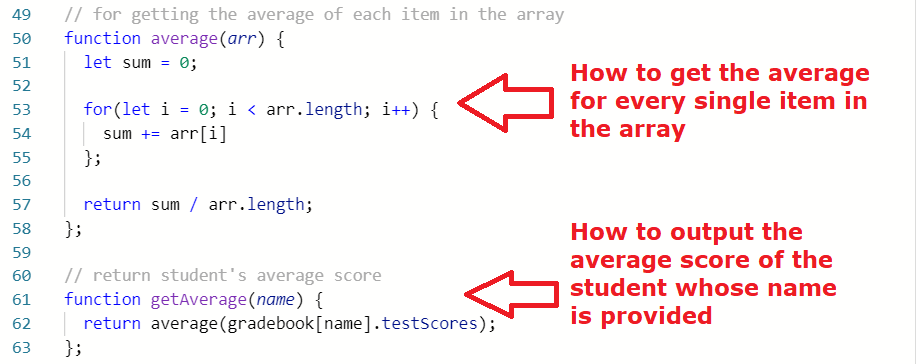
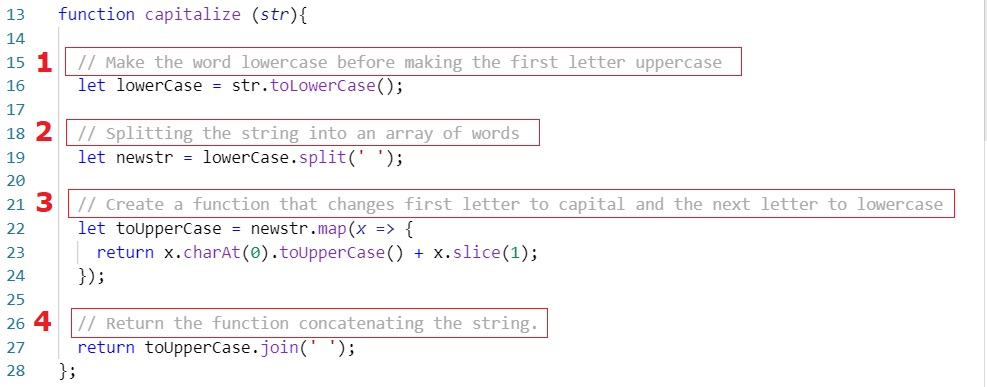
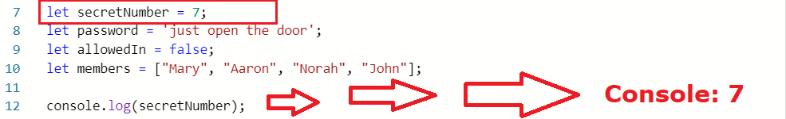

Approach to Problem Solving
24 Sept 2021 | 6 mins read | Tech
Sprint 4 was really all about flexing my brain to figure out the answers to more complex JavaScript problems. It involved applying a cocktail of concepts that I have learned in Foundations thus far. At some point I felt confident, and there were also times when I was intimidated by the problem that I could not frame my mind properly on how to “attack” it.
Nay. Got blocked on a simple problem.
What was the problem?
I have just finished creating a function that would add newly inputted test scores to the student’s list of scores. However, when I executed the function in my code, it gave me an error message. It turned out that the test code already executed the same function, and putting the same thing in my own code only results in executing it twice! It was like a scenario when someone bought bread from the supermarket, and upon coming home, found out that there's already bread because someone else also thought to do the exact same thing. There was a disconnect between my appreciation of the test code and me creating my own code.

What problem solving techniques did you use?
The techniques I used in this situation were “trying something” and the rubber ducky method. I knew that my solution to the problem was right and that my code was nearly there. I just had to figure out which part was triggering the error. I did a lot of trying something and talking to an imaginary friend so I could have a different perspective of my codes.
How did you feel throughout the process?
I felt quite frustrated throughout because I was so excited to complete the exercise yet I had this very "simple" problem that just would not budge and kept me from progressing to the next part of the sprint.
What did you learn?
I learned that for developers, errors are a daily reality. It is very important to have a good eye for detail. Even a rogue curly brace or a missing space or inconsistent quotes (single or double) can result in getting an error and could potentially keep someone stuck for hours on end. Also, taking a break in order to gain a new perspective on how to approach a problem also really helps.
Yay! Solved a problem in an elegant way.
What was the problem?
The problem was about creating 2 functions relating to a gradebook. One function should show how to get the average grade of every student in the entire gradebook, while the second one should output the average test score of a student when their name is passed inside the function. I got blocked here because I could not figure out which between the 2 functions should be created first and which one should be placed inside the other function. I was literally stuck trying to figure out which between the chicken and the egg comes first.
What problem solving techniques did you use?
To solve the problem, I first used pseudocode to break it down to more manageable bits. I had to reflect on the problem so that I could understand what the requirements of the test were and how I could present the functions in a logical and sensible manner. I Googled certain parts of my pseudocode, such as how to get the average of the items inside an array, as well as checking on freeCodeCamp whether my usage of dot and bracket notation was correct. I also read the hints on Slack as someone else had already asked for help about the same problem.
Here is another example of pseudocoding:
How did you feel throughout the process?
Solving something like that for the first time was quite overwhelming because it was more complex than the isolated problems I was used to. However, it felt really good being able to solve it in the end using a variety of tools and problem solving techniques. I feel that with more practice in solving JavaScript exercises, I will eventually get the hang of it.
What did you learn?
I realised that it is very important to first understand the problem so that I will know how to go about it. I noticed that I usually encounter roadblocks when I could not even explain what the problem was. As a result, I would not know what to research about, and even asking for help from others would be difficult because I could not describe the situation.
Problem Solving Techniques I Commonly Use
Pseudocode / Trying something / Rubber ducky method / Improving your process with reflection / Googling
These techniques are the ones I immediately lean back on when I am stuck. I find them to be quite useful when it comes to simple problems that I probably just overthink or over-analyse. With these, I am able to be more independent in arriving at a solution, exhausting all possible ways to solve a problem.
Reading error messages / Console.logging
These two are extremely helpful for me to verify that I am on the right track. Sometimes though it is quite hard to understand error messages, although it helps when it points me to the line where I am getting the error from. On the other hand, what is console.log? It is basically just like checking your bank account if it contains the amount you expect it to hold after buying something or transferring funds to someone.
I am consciously making an effort to console.log my variables and functions, but sometimes I do forget and then I do it only after I have finished with my code and when I am getting errors, which I know should not be the way to do it.
Asking your peers for help / Asking coaches for help
There have been times during this sprint when I got stuck on a problem and I could not proceed for hours. I realised that sometimes there is a limit to what we can do on our own, and that it is okay to ask for help from other people, such as my peers or my coach. I have set a cutoff for myself that if I get blocked on a problem for an hour, I will ask for help on Slack or reach out to my facilitator.